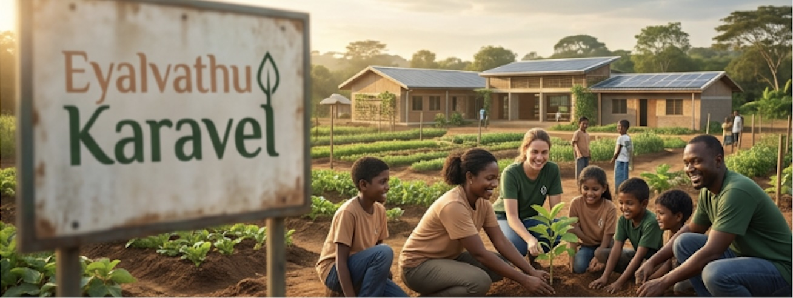
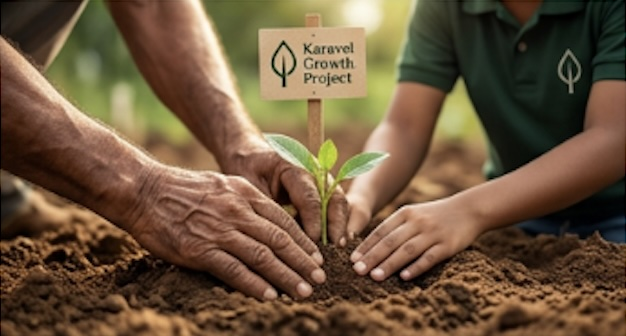
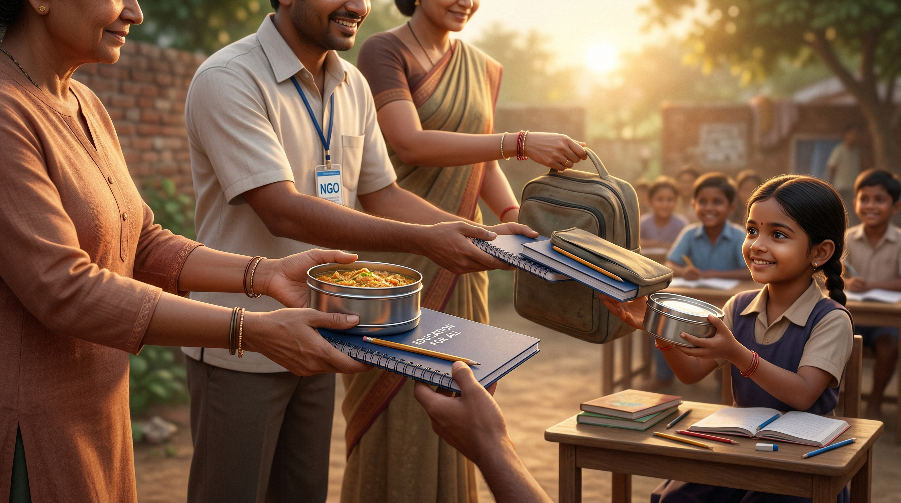
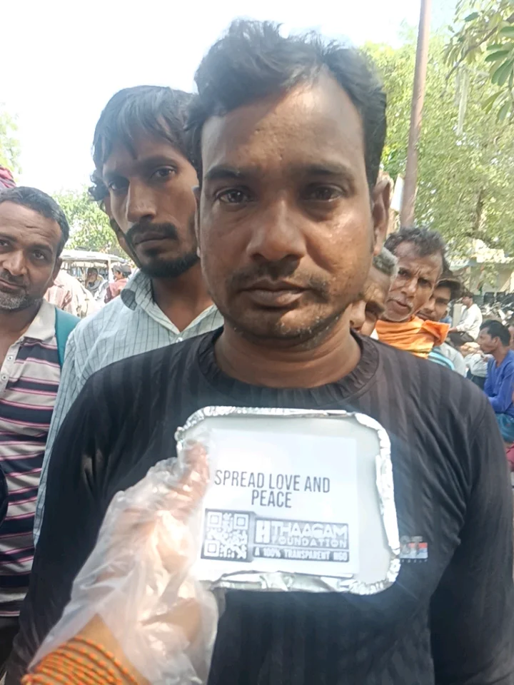
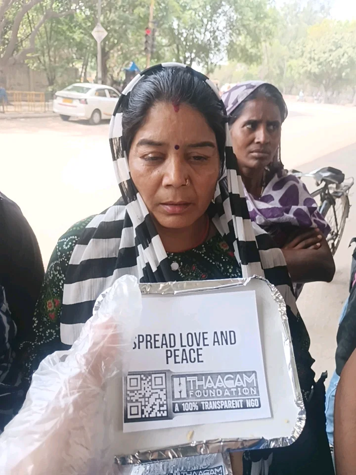
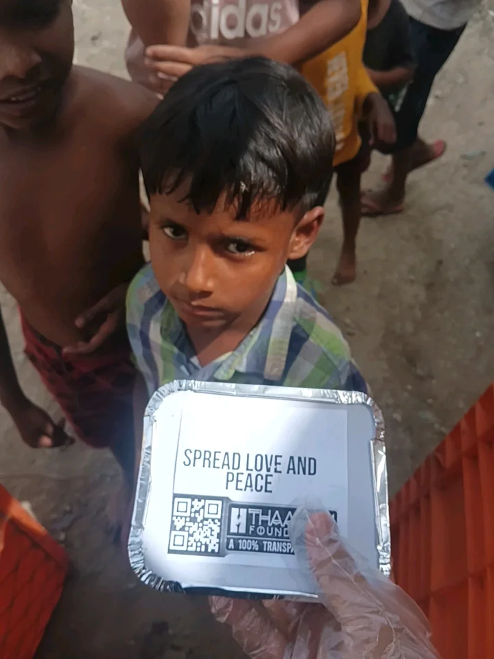
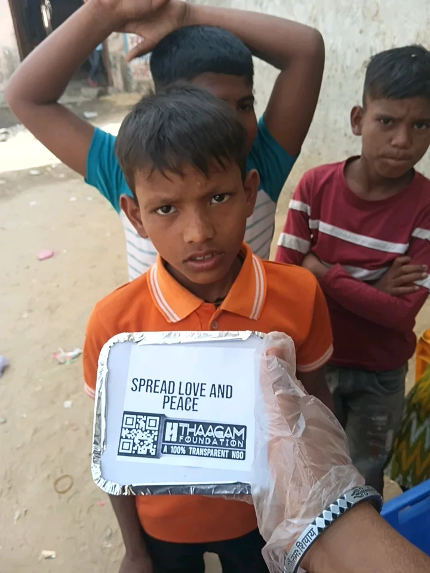
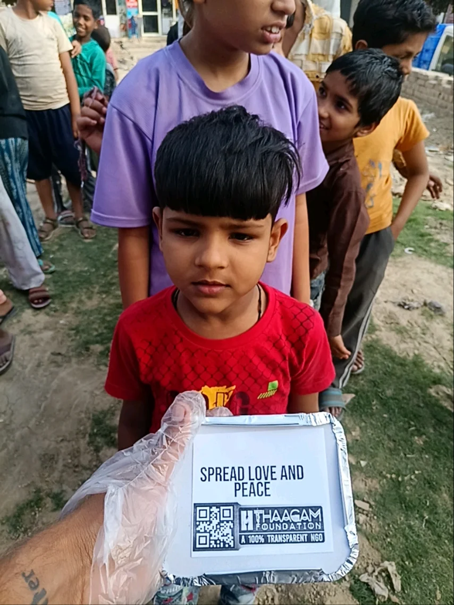
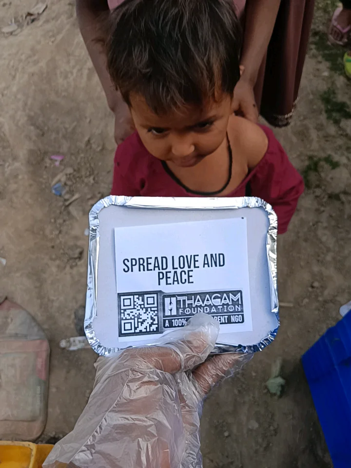
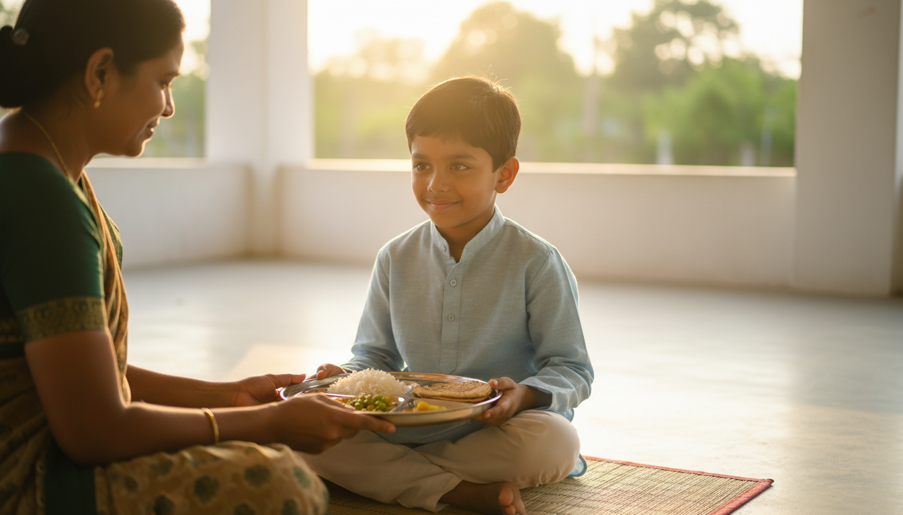

Founder-led, community-first
This initiative is run directly by me, with no layer between intention and action. Meals reach children in underserved neighbourhoods; school kits reach classrooms where small supplies unlock big participation.
Personal · consistent · transparent
Eyalvathu Karavel is a personal initiative to bring reliable nutrition and learning support to underprivileged children—documented with care so supporters can see the journey, day by day.
About


The name reflects a simple promise: to stand close to those who need warmth, nutrition, and a fair chance at learning. What began as individual outreach has grown into a disciplined rhythm of food distribution and school support—recorded honestly so every contribution of time and trust stays visible.
This initiative is run directly by me, with no layer between intention and action. Meals reach children in underserved neighbourhoods; school kits reach classrooms where small supplies unlock big participation.
For nearly every distribution day across the last year and continuing into this year, photographs document the work—so well-wishers see real faces, real places, and real consistency.
Motto
Hope, Help, Heal
A simple promise to serve with compassion, respond with care, and create lasting change.
What we stand for
These values shape every decision, every distribution day, and every relationship we build in Tamil Nadu and beyond.
We begin with empathy, dignity, and genuine care for every life we touch.
We act with honesty, responsibility, and transparency in all that we do.
We believe meaningful change comes through selfless and consistent action.
We step forward where help is needed most, even when the path is difficult.
We work to empower people, strengthen communities, and create lasting hope.
Practical commitments that keep our work grounded, respectful, and sustainable.
Every act of help must preserve respect, humanity, and self-worth.
Our work should be honest, humble, and driven by genuine intent.
We aim to support in ways that build independence, confidence, and resilience.
Real change happens by listening, engaging, and growing together with people.
Transparency in action and responsibility in service are central to our work.
We value efforts that bring meaningful and sustainable change over time.
Our work
Inspired by national programmes that link meals to attendance and dignity—similar in spirit to large-scale efforts like the Akshaya Patra mid-day meal mission and holistic child development models championed by organisations such as Smile Foundation—this work stays intentionally local and hands-on.


Nutritious meals shared with underprivileged children on a near-daily basis—building trust, routine, and a little more ease in hard days.
On my birthday last year, notebooks and supplies reached children in a government school—so learning isn’t paused for lack of basics.
Photo records for almost every distribution day create a living archive of presence and progress—available to review in the gallery.
Impact
Update these figures anytime—they are placeholders you can align with your actual counts (days served, children reached, schools touched).
Gallery
Daily food distribution — photos from data/food/. Add or replace files there,
then update the image paths in index.html if filenames change.






Campaigns
Placeholder campaign layouts for future planning. We are not soliciting public donations at this time—see current status. Progress bars are illustrative only.
Ongoing support to keep weekday distributions steady for children in the programme.
Illustrative goal progress — replace with live numbers.
Building on last year’s birthday stationery drive: more schools, more children with full basic kits.
Illustrative goal progress — replace with live numbers.
Get involved
There are many ways to stand alongside this work—volunteering, partnership, and visibility matter deeply. Financial support from the public will open in the future; for now, please see our current status.
Join distribution days, help pack meals, or document stories with sensitivity.
Offer timeSchools, local vendors, and aligned organisations can explore collaboration as we grow.
Start a conversationWe are completing formal registration first. We are not accepting public or external donations at this stage—work is self-supported internally until the right foundations are in place.
Read current status
Nourish with dignity
Every meal we share is offered with respect—nourishing hungry people through steady, hands-on outreach rooted in community care and transparent documentation.
Media & stories
Essays on nutrition, transparency, education, and grassroots work—written for supporters and neighbours following Eyalvathu Karavel in Tamil Nadu. Scroll sideways to browse all stories.
Transparency
Eyalvathu Karavel is currently in the process of formal registration and obtaining the appropriate recognition to begin its work as a fully established organization.
At this stage, we are not accepting donations or financial contributions from the public or external supporters. All current efforts and contributions are being self-supported internally.
We are committed to building this initiative with transparency, responsibility, and the right foundations, and we look forward to opening future opportunities for public support after the required formal processes are completed.
Reach out about volunteering, partnerships, or general questions about the work in Tamil Nadu. We are grateful for your interest—we are not able to accept financial contributions at this time (see current status).